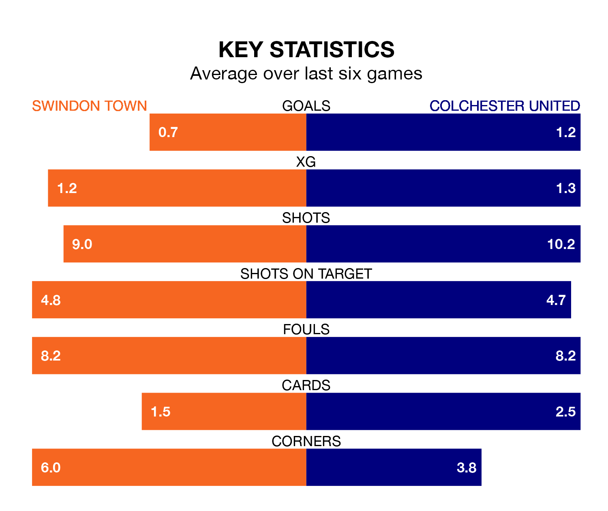

Colchester United make the journey to the County Ground to play Swindon Town on Saturday looking to pick up points to end their three-game losing streak.
Colchester's struggles have left them with just three points from their last six EFL League Two matches, while their opponents have earned the same number from a possible 18.
With 47 goals in 26 games so far this season, Swindon are scoring more than average in the league with 1.8 goals per game. But they are conceding more than average too, letting in 50 goals at a rate of 1.9 per game.
Colchester, meanwhile, are below average scorers, with 1.3 goals per game, compared to a league average of 1.5. They have conceded 2.0 goals per game.
United are 22nd in the table after 26 games, of which they have won seven and drawn two, earning 23 points.
Town are six places ahead of the U's in 16th, with nine wins and six draws putting them on 33 points.
In Jake Young, the Robins have one of the league's most on-form strikers so far this season. He has notched 16 goals in 25 appearances, to sit second in the scoring charts.
His goal rate of one every 123 minutes is quicker than that of Joseph Taylor, the away team's top scorer with a goal every 178 minutes, and a total of 11 goals in 25 games.
In the last 10 years, Swindon and Colchester have played each other on 18 occasions. Swindon won three of them, Colchester nine, and they drew six times.
On average, the Robins scored 1.0 goal and the U's 1.4 in those matches.
Their last meeting was on November 7, when Colchester won 3-1 at home.
Swindon's last match was on Monday, a 3-1 loss against Crawley Town, with Daniel Kemp getting the goal for the Robins.
Colchester lost 1-0 against Gillingham last time out, also on Monday.
Updated: 12:57, 02/01/24